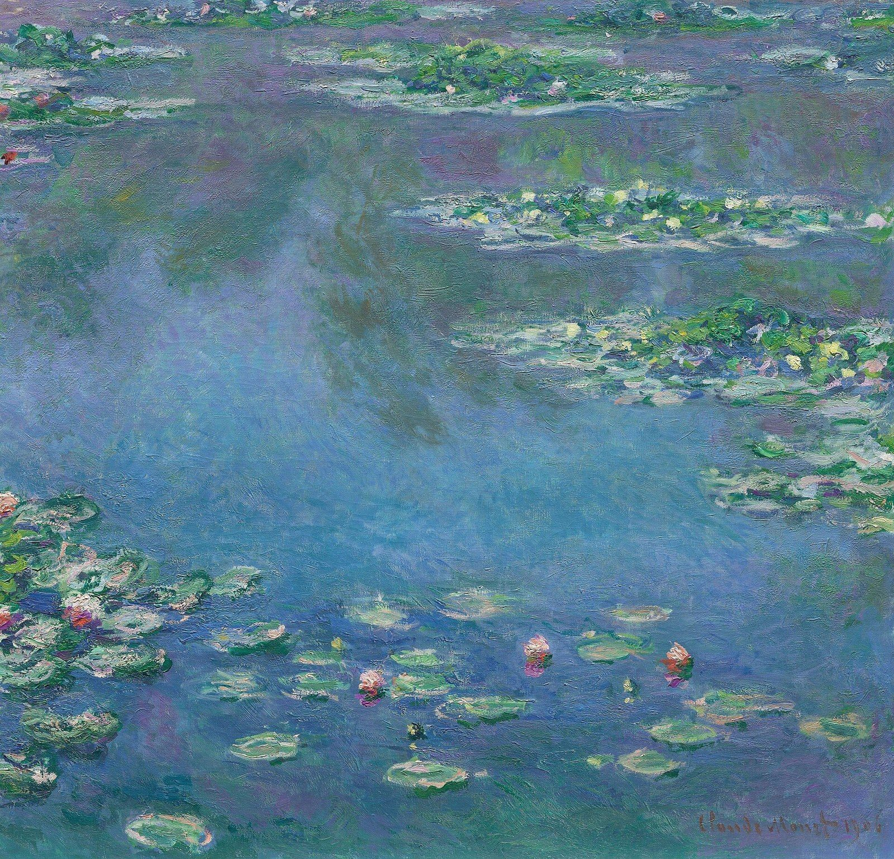

1서술객관적 사실
무엇이 보이는가?
눈에 보이는 것을 정리해 기록합니다.
제목작가제작 시기재료무엇이 보이나?
느낌·평가는 아직 쓰지 않아요.
‘그림이 참 좋다’라는 느낌을 넘어, ‘왜 좋은지, 무엇을 말하고 있는지’ 논리적으로 찾아가는 과정이 미술 비평입니다. 눈으로 보는 ‘관찰’에서 마음으로 읽어내는 ‘해석’으로 나아가며, 생각의 근육을 단련합니다.
무엇이 보이는가?
눈에 보이는 것을 정리해 기록합니다.
느낌·평가는 아직 쓰지 않아요.
어떻게 구성되었는가?
선·형·색 같은 조형 요소와 표현 방법을 관찰합니다.
작가 이야기·시대 배경은 해석에서.
무엇을 의미하는가?
분석한 내용을 근거로 작품의 의미를 풀어냅니다.
“~하고 싶었다”에는 근거를 붙여요.
어떤 가치가 있는가?
앞 단계를 바탕으로 작품의 가치를 판단합니다.
“좋다”만 쓰지 말고 이유까지.
강의 영상 「펠드먼의 비평 4단계」

분석 칸에는 조형 요소와 조형 원리를 정확한 용어로 쓰고, 그래서 어떤 느낌(효과)이 나는지까지 씁니다.
▶ 복습 영상 「조형요소와 원리」 보기
「의사 가셰의 초상」은 1890년 빈센트 반 고흐가 캔버스에 유채로 그린 작품이다. 크기는 67×56cm이다. 그림 속 인물은 고흐가 삶의 마지막 시기에 만난 의사 폴 가셰이다. 가셰는 턱을 한 손에 괸 채 우울한 표정으로 앉아 있고, 탁자 위에는 책 두 권과 디기탈리스 꽃이 놓여 있다. 색은 주로 푸른색과 초록색이며, 물감을 두껍게 바른 강한 붓질과 거친 질감이 눈에 띈다.
이 작품은 강한 선과 두꺼운 물감층이 돋보인다. 파란색과 초록색의 조화는 차분하고 우울한 분위기를 만들고, 얼굴과 손의 밝은 색은 어두운 배경과 대비되어 시선을 모은다. 인물을 화면 가운데에 배치하여 안정감(균형)을 주며, 전경의 꽃과 시각적 균형을 이룬다. 배경의 물결치는 붓질이 반복되며 리듬감(율동)을 만들어 관객의 시선을 이끈다.
표면적으로 이 작품은 삶의 마지막 시기에 자신의 정신적 문제를 돌봐 준 의사 가셰에 대한 감사와 존경을 담고 있다. 그러나 가셰의 우울한 표정과 요동치는 거친 붓질은 사실 고흐 자신의 절망과 고통, 내면의 불안과 혼란을 비추는 듯하다. 강렬한 색상과 선은 단순한 묘사를 넘어 작가의 심리 상태를 쏟아내는 표현 도구이다.
「의사 가셰의 초상」은 고흐 특유의 독특한 스타일(강렬한 색상과 두꺼운 붓질)이 그의 심리 상태와 완벽하게 결합된 작품이다. 감정적으로 가장 강렬한 에너지를 전달하며, 그의 삶과 예술적 여정을 이해하는 데 미술사적으로 매우 중요한 작품으로 평가된다. 나는 이 작품이 고흐의 예술적 재능과 내면세계를 가장 깊이 이해하게 해 주는 걸작이라고 생각한다.
연습할 때는 책과 인터넷을 찾아봐도 됩니다. 다 쓰고 나서 모범답안을 펼쳐 비교하세요.

1966년, 비닐과 솜으로 만든 팝아트 조각. 단단한 변기를 흐물흐물하게 바꾸면 무엇이 달라질까요?
1. 서술 — 클래스 올덴버그의 「부드러운 변기」는 1966년에 만든 팝아트 조각이다. 우리가 매일 쓰는 변기를 딱딱한 도자기가 아니라 부드러운 비닐과 솜으로 만들었다. 그래서 변기의 몸통과 뚜껑이 흐물흐물 아래로 늘어져 있고, 실제 변기보다 크게 만들어져 받침대에 매달려 있다.
2. 분석 — 이 작품에서는 질감과 형이 가장 두드러진다. 원래 매끄럽고 단단해야 할 변기가 주름지고 처진 형으로 바뀌어, 단단함과 부드러움의 대비가 생긴다. 아래로 늘어지는 곡선은 무게감과 동세를 만들고, 흰색과 파란색의 단순한 색은 형태에 시선을 강조한다. 실제보다 큰 비례는 익숙한 물건을 낯설게 보이게 한다.
3. 해석 — 1960년대 미국에서는 대량 생산된 물건과 광고, 대중문화가 일상을 채웠고, 팝아트는 이것을 예술의 주제로 삼았다. 올덴버그는 가장 흔하고 하찮게 여기는 변기를 부드럽게 바꾸어, 쓸모가 사라진 물건을 새로운 눈으로 보게 한다. 이 작품은 예술과 일상의 경계를 허물고, 익숙한 것을 낯설게 바라보라고 말한다.
4. 판단 — 「부드러운 변기」는 일상 사물을 재료와 크기만 바꾸어 전혀 다른 경험으로 만든 팝아트의 대표작이다. 유머와 풍자가 담겨 있으면서도 “사물의 형태와 기능은 어떤 관계인가?”라는 질문을 던진다는 점에서 가치가 크다. 나는 이 작품이 미술이 꼭 아름다운 것만 다룰 필요는 없다는 것을 보여 준다고 생각한다.

텔레비전과 기계 부품을 쌓아 말 탄 왕을 만든 비디오 조각. 이번에는 혼자 힘으로, 조용히 써 봅니다.
1. 서술 — 「무령왕」은 비디오 아트의 선구자 백남준의 작품이다. 여러 대의 텔레비전 모니터와 낡은 기계 부품을 쌓아 말을 탄 왕의 모습을 만들었다. 모니터 화면에서는 다양한 영상이 흘러나오고, 한국의 전통적인 이미지와 현대 기술이 한 작품 안에 섞여 있다.
2. 분석 — 네모난 텔레비전을 쌓아 만든 형은 단단하고 기계적인 느낌을 준다. 같은 모양의 모니터가 반복되면서 통일감이 생기고, 화면마다 다른 영상이 움직이면서 변화와 율동이 생긴다. 차가운 금속·기계의 질감과 화면 속 밝은 색이 대비를 이루어 시선을 끈다. 말과 사람의 비례를 살려 쌓아 올려 전체적으로 안정된 균형을 이룬다.
3. 해석 — 무령왕은 백제의 문화가 크게 꽃피던 시기의 왕이다. 백남준은 옛 왕을 가장 현대적인 재료인 텔레비전으로 다시 만들어, 한국의 전통과 현대 기술을 하나로 이었다. 이 작품은 역사가 과거에 머무르지 않고 기술을 통해 새롭게 살아날 수 있다는 그의 생각을 보여 준다.
4. 판단 — 「무령왕」은 전통과 현대, 동양과 서양을 연결하려 한 백남준의 예술관이 잘 드러난 작품이다. 텔레비전을 그림 붓처럼 사용해 미디어 아트라는 새로운 미술 분야를 연 점에서 미술사적 가치가 크다. 나는 이 작품이 오래된 역사를 오늘의 언어로 다시 이야기한다는 점에서 의미 있다고 생각한다.
평가 전에 이 자리에 공개합니다. 평가 날에는 네 작품 가운데 하나를 제비뽑기로 뽑아, 그 작품의 도판을 보며 씁니다. 공개되면 작품마다 사조와 시대 배경을 미리 공부해 두세요.